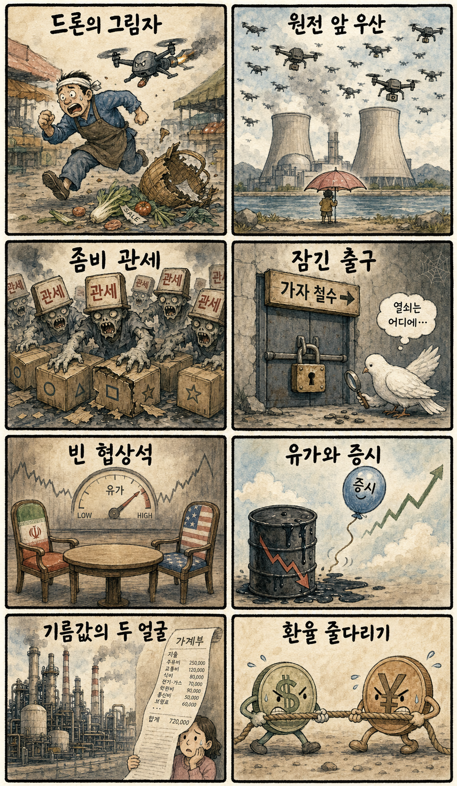
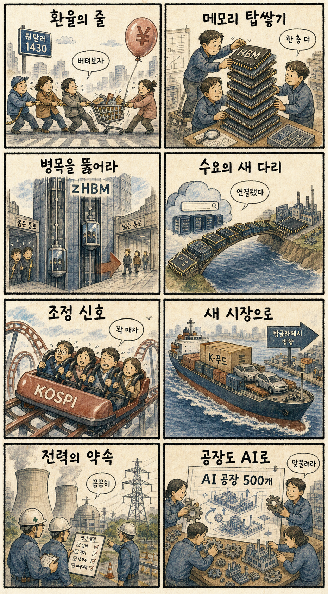

01
팔란티어 +29.45% — 실적 기대가 만든 급등
내용요약 팔란티어는 162.66달러로 마감해 전일 대비 29.45% 뛰며 AI 소프트웨어 강세를 주도했습니다.
예상여파 국내 기업용 AI·데이터 분석주 심리에 우호적이지만 단일 종목 급등을 그대로 추격할 근거는 아닙니다.
MORNING_BRIEFING_20260805
작성 시각: 2026-08-05 06:38 KST · 직전 미국 정규장과 2026-08-05 KST 당일 공개 기사 기준
직전 미국 정규장인 8월 4일에는 다우 +1.71%, S&P 500 +1.79%, 나스닥 +2.59%로 동반 급등해 다우와 S&P 500이 사상 최고치를 기록했습니다. AI 실적 기대와 중동 협상 진전 기대에 따른 국제유가 급락이 위험선호를 키웠습니다. 한국 증시에는 AI·반도체 심리와 비용 부담 완화가 우호적이지만, 전일 KOSPI +1.62%·KOSDAQ +5.88% 상승 뒤라 장전 갭 추격은 피해야 합니다.
| 지수 | 종가 | 등락률 | 한국 증시 영향 |
|---|---|---|---|
| 다우존스 | 54,085.88 | +1.71% | 경기민감주와 위험자산 심리 개선 |
| S&P 500 | 7,736.52 | +1.79% | 대형주 전반의 투자심리 강화 |
| 나스닥 종합 | 26,584.99 | +2.59% | 국내 AI·반도체에 가장 직접적인 호재 |
다우와 S&P 500이 최고치를 새로 썼습니다.
나스닥 +2.59%, 팔란티어 +29.45%로 기술주가 앞섰습니다.
KOSPI +1.62%, KOSDAQ +5.88%로 전일 상승했습니다.
변동성과 검증 표본 부족으로 공식 추천은 없습니다.
8월 4일 보고서는 수급·컨센서스·유사 조건 보정 표본과 손익비 문턱을 동시에 검증한 종목이 없어 공식 추천을 내지 않았습니다. 따라서 8월 4일 실제 시가를 사후 진입 기준으로 계산할 종목이 없으며 게시 당시 판단을 바꾸지 않습니다.
| 지수 | 종가 | 등락률 | 해석 |
|---|---|---|---|
| 다우존스 | 54,085.88 | +1.71% | 사상 최고, 경기민감주 위험선호 |
| S&P 500 | 7,736.52 | +1.79% | 대형주 전반 동반 상승 |
| 나스닥 종합 | 26,584.99 | +2.59% | AI·반도체가 상승 주도 |
| KOSPI | 6,358.95 | +1.62% | 전일 급락 뒤 대형주 반등 |
| KOSDAQ | 780.72 | +5.88% | 성장주 중심 강한 위험선호 |
AI 소프트웨어, 반도체, 서버·냉각, 전력망, 제조 AI, 유가 하락 수혜 운송·항공
정유, 급등 후 과열된 코스닥 테마, 환율 민감 내수, 원가 전가력이 낮은 수입업종
내용요약 팔란티어는 162.66달러로 마감해 전일 대비 29.45% 뛰며 AI 소프트웨어 강세를 주도했습니다.
예상여파 국내 기업용 AI·데이터 분석주 심리에 우호적이지만 단일 종목 급등을 그대로 추격할 근거는 아닙니다.
내용요약 슈퍼마이크로는 31.69달러로 올라 서버와 데이터센터 투자 기대를 반영했습니다.
예상여파 국내 서버 부품·냉각·전력기기 공급망에 긍정적인 연결고리가 될 수 있습니다.
내용요약 AMD는 518.58달러로 상승했지만 실적 발표 뒤 시간외 거래에서는 매물이 나온 것으로 보도됐습니다.
예상여파 국내 반도체 심리는 지지하되 정규장 강세와 시간외 반응의 엇갈림을 함께 봐야 합니다.
내용요약 크라우드스트라이크는 211.22달러로 올라 AI·클라우드 보안 수요 기대를 반영했습니다.
예상여파 국내 보안주에는 심리 호재지만 실적과 반복매출 확인 없는 테마 추격은 위험합니다.
내용요약 아마존은 277.42달러로 하락해 대형 기술주 랠리에서 소외됐습니다.
예상여파 클라우드 설비투자 기대는 유효하지만 단기 주가가 모든 AI 인프라 종목에 같은 방향을 주지는 않았습니다.
미국 3대 지수 급등, 국제유가 하락, AI 소프트웨어·반도체 강세는 국내 성장주에 우호적입니다. 전일 국내에서도 KOSPI +1.62%, KOSDAQ +5.88%, 삼성전자 +0.21%, SK하이닉스 +0.64%, 두산에너빌리티 +7.83%로 반등했습니다. 다만 코스닥 급등과 반도체의 큰 장중 진폭은 추격 위험을 높입니다. 원·달러 1,430원대, 외국인 현·선물 수급, 첫 30분 거래대금과 저점 유지 여부를 확인해야 합니다.
오늘은 추천 없음 — 현금 관망
전일까지의 외국인·기관 수급, 컨센서스 변화, 30건 이상 유사 조건 확률 보정, 예상 손익비 1.5 이상을 동시에 검증한 후보가 없습니다. 전일 KOSDAQ +5.88%와 두산에너빌리티 +7.83% 등 급반등 종목은 과열·갭 위험 문턱에도 걸립니다. 임의의 점수와 확률은 제시하지 않습니다.
관심 연결종목 삼성전자·SK하이닉스(zHBM·AI 메모리), 두산에너빌리티(전력), 국내 서버·냉각주는 관찰 대상일 뿐 매수 추천이 아닙니다. 장전 급등과 시초가 갭 발생 시 추격매수 금지입니다.
환율 고착이 외국인 수급과 수입물가에 미치는 영향을 봅니다.
미국 AI 랠리 반영 뒤 갭을 지키는지 확인합니다.
중동 협상 기대와 이란의 강경 입장 사이 방향을 점검합니다.
코스닥 급등 뒤 차익매물과 저점 이탈 여부를 봅니다.
핵심 요약: AI 투자축이 칩에서 전력·냉각·금융·제조 현장으로 넓어지는 가운데, 차세대 zHBM과 대규모 AI칩 금융이 공급망 경쟁을 키우고 있습니다. 미국의 AI 규제 선택은 기술경쟁과 안전성 검증 비용을 동시에 좌우할 변수입니다.
내용요약 생성형 AI 확산으로 데이터센터의 전력과 냉각수 소비가 빠르게 늘며 에너지 인프라가 AI 경쟁력의 핵심으로 떠오른다는 보도입니다.
예상여파 서버·냉각·전력망·발전 설비 투자가 동반 확대될 수 있지만 지역 전력비와 물 사용 갈등도 커질 수 있습니다.
내용요약 구글과 브로드컴 컨소시엄이 대규모 AI 반도체 공급을 뒷받침할 금융 인프라를 구축한다는 보도입니다.
예상여파 AI칩 조달이 장기 금융계약과 결합되며 가속기 공급망과 데이터센터 투자 규모가 한 단계 커질 수 있습니다.
내용요약 삼성전자가 기존 HBM의 적층·데이터 이동 한계를 겨냥한 차세대 3D 메모리 zHBM을 처음 공개했다는 보도입니다.
예상여파 차세대 AI 메모리 경쟁이 대역폭뿐 아니라 수직 데이터 이동과 패키징 구조로 확장될 전망입니다.
내용요약 산업부가 2030년까지 AI팩토리 500개 구축을 목표로 제조업의 AI 전환을 추진한다는 보도입니다.
예상여파 산업용 AI·센서·로봇·엣지컴퓨팅 수요가 늘 수 있으나 현장 데이터 표준화와 중소기업 투자 여력이 관건입니다.
내용요약 미국 행정부가 AI 안전 규제와 기술 경쟁력 사이에서 정책 수위를 조정하고 있다는 보도입니다.
예상여파 규제 방향에 따라 빅테크의 모델 공개, 안전성 검증 비용, 중국과의 기술경쟁 속도가 달라질 수 있습니다.
핵심 요약: 우크라이나 민간인 드론 공격과 가자 철수 조건 갈등이 이어지는 가운데 미국의 관세정책과 이란 협상 교착이 무역·에너지 시장을 흔들고 있습니다. 유가 하락 기대가 증시를 밀었지만 지정학 위험은 해소되지 않았습니다.
내용요약 우크라이나 현지 시장에서 상인을 뒤쫓는 자폭드론 영상이 공개돼 민간인 공격 논란이 커졌다는 보도입니다.
예상여파 민간 피해 확대는 휴전 협상과 대러 제재 논의를 어렵게 하고 유럽의 방공·지원 부담을 높일 수 있습니다.
내용요약 미국 중간선거를 앞두고 되살아나는 관세정책이 동맹과 세계 무역질서에 미칠 파장을 분석한 보도입니다.
예상여파 관세 불확실성이 장기화하면 기업의 공급망 재편 비용과 소비자 가격 부담이 함께 커질 수 있습니다.
내용요약 이스라엘 총리가 하마스의 완전한 무장해제 전까지 가자지구에서 철수하지 않겠다는 입장을 밝혔다고 전한 보도입니다.
예상여파 철수 조건을 둘러싼 간극이 커지면 휴전 이행과 인도주의 지원 정상화가 지연될 수 있습니다.
내용요약 미국이 이란에 협상 재개를 압박했지만 이란은 회담 의사가 없다고 맞서며 양측 입장이 평행선을 달린다는 보도입니다.
예상여파 협상 교착은 중동 위험 프리미엄과 국제유가 변동성을 다시 확대할 수 있습니다.
내용요약 사우디 아람코의 2분기 순이익이 국제유가 상승 영향으로 전년보다 44% 늘었다는 보도입니다.
예상여파 산유국 재정과 에너지 투자에는 우호적이지만 유가 방향 전환 시 이익 변동성도 커질 수 있습니다.

핵심 요약: 원·달러 환율이 1,430원대에 머무는 동안 국내 증시는 급락 뒤 반등했으며, zHBM 공개와 AI·전력 인프라 투자가 산업정책의 중심으로 떠올랐습니다. 방글라데시 CEPA는 수출시장 다변화의 새 통로를 제시합니다.
내용요약 엔화 반등에도 원·달러 환율이 1,430원대에서 내려오지 못한 배경을 대외 불확실성과 달러 수요에서 찾은 보도입니다.
예상여파 원화 약세가 지속되면 외국인 수급과 수입물가에 부담이지만 수출기업의 환산 실적에는 일부 완충이 될 수 있습니다.
내용요약 삼성전자가 기존 HBM의 적층·데이터 이동 한계를 겨냥한 차세대 3D 메모리 zHBM을 처음 공개했다는 보도입니다.
예상여파 차세대 AI 메모리 경쟁이 대역폭뿐 아니라 수직 데이터 이동과 패키징 구조로 확장될 전망입니다.
내용요약 최근 코스피 변동성이 확대된 가운데 경기·유동성·기업이익 관련 핵심 경제지표를 점검한 보도입니다.
예상여파 급반등 뒤에는 지수 추격보다 실적과 수급이 확인되는 업종 중심의 선별 대응이 중요해질 수 있습니다.
내용요약 한국과 방글라데시의 포괄적경제동반자협정 타결로 식품·자동차·인프라 협력 확대가 기대된다는 보도입니다.
예상여파 관세 장벽 완화와 시장 접근성 개선은 수출 다변화에 도움을 줄 수 있으나 실제 품목별 일정 확인이 필요합니다.
내용요약 정부가 대형 국가 프로젝트를 뒷받침할 안정적인 전력과 용수 공급 방안을 추진한다는 보도입니다.
예상여파 전력망·수처리·발전 인프라 투자가 확대될 수 있지만 사업 일정과 재원 조달이 핵심 변수입니다.
